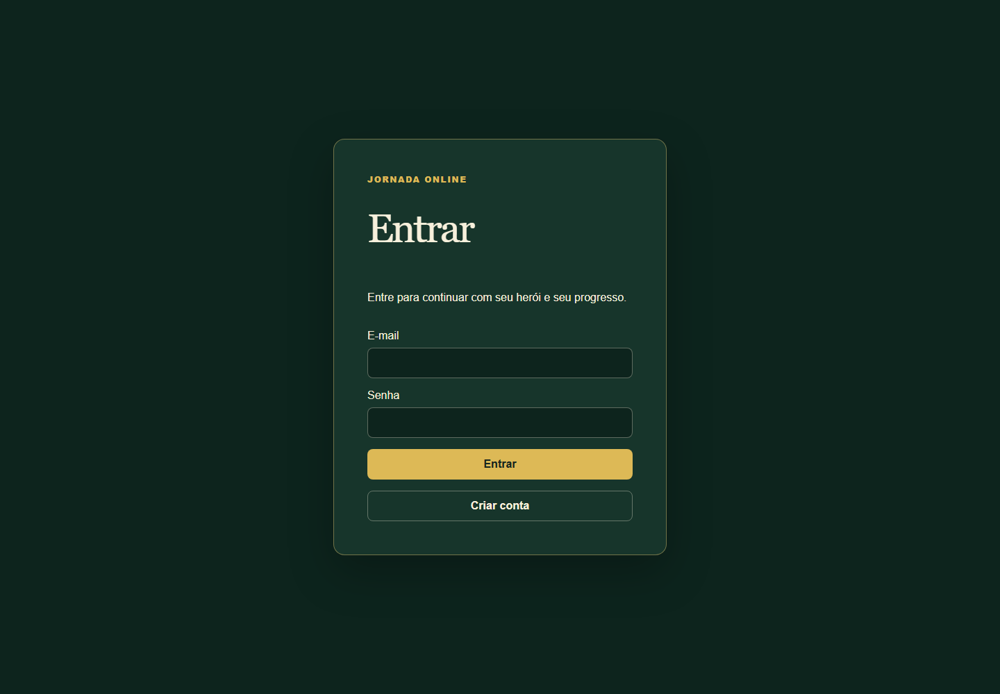

RPG Jovem Cristão — recuperação da identidade completa
UI-RESTORE-002 · PENDING_VISUAL_APPROVAL · Não publicado.
A proposta parcial UI-MOBILE-001 não foi aprovada. Esta revisão recupera as dez opções originais e acrescenta EBD ao mesmo menu: Herói, Jornada, Missões, Equipamentos, Mochila, Loja, Coleção, Diário, Guilda, Arena e EBD. Oito módulos ficam visíveis como “Em desenvolvimento”, sem links ou operações protegidas.
Por confirmação do usuário em26/10, o commit5edc93f é a referência principal. A imagem14/10 enviada no ChatGPT não está disponível neste turno. A coluna à esquerda é uma reconstrução local do commit, com dados sintéticos e mesmas dimensões, e não é a fotografia original14/10. O código histórico foi executado somente em loopback, com dependências já instaladas e ajuste de raiz Turbopack para resolver a junction; nenhum componente visual histórico foi editado.
Cadastro/Auth/Guilda/EBD atuais preservados. Economia, rotas, APIs e RPCs continuam protegidas. Capturas originais do navegador, sem edição. Clique nos PNGs para ampliar.
Desktop · Chromium 1440 × 1000 — Página pública
Referência principal · 5edc93f reconstruído
UI-RESTORE-002 · proposta não aprovada
Desktop · Chromium 1440 × 1000 — Entrada com Viajante
Desktop · Chromium 1440 × 1000 — Herói / Santuário do Viajante
Celular · WebKit 390 × 844 — Página pública
Celular · WebKit 390 × 844 — Entrada com Viajante
Celular · WebKit 390 × 844 — Herói / Santuário do Viajante